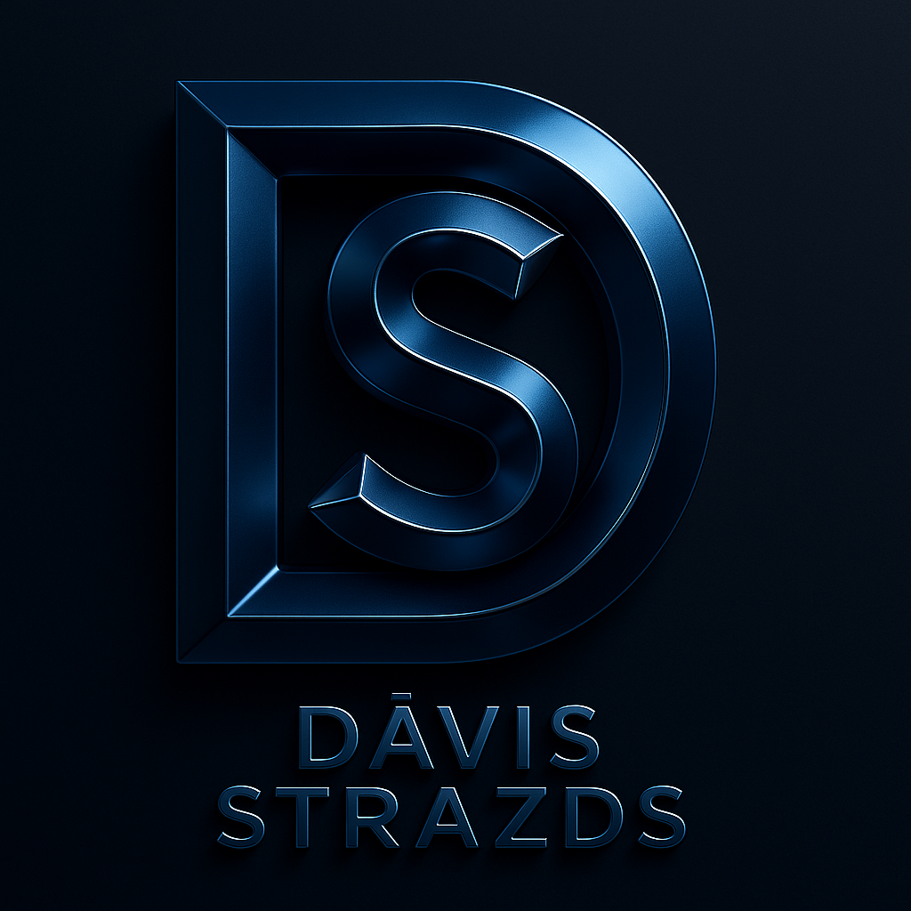

<style>
    .lang-switcher { display: flex; gap: 10px; margin-left: 20px; }
    .lang-btn { 
        background: none; border: 1px solid var(--glass-border); 
        color: var(--text-muted); cursor: pointer; padding: 4px 8px; 
        border-radius: 4px; font-size: 12px; transition: 0.3s;
    }
    .lang-btn.active { color: var(--accent-gold); border-color: var(--accent-gold); }
    .lang-btn:hover { color: #fff; }
</style>
<header class="navbar">
    <div class="navbar-container">
        <!-- Branding Identity (Zīmola identitāte) -->
        <a href="index.html" class="navbar-logo">
            
            Dāvis Strazds
        </a>

        <!-- Mobile Toggle -->
        <div class="navbar-toggle" id="mobile-menu-toggle">
            <i class="fas fa-bars"></i>
        </div>

        <!-- Navigācija -->
        <ul class="navbar-menu" id="nav-menu">
            <li><a href="index.html" data-i18n="nav.home"><i class="fas fa-home"></i></a></li>
            <li><a href="par_mani.html" data-i18n="nav.about"><i class="fas fa-user"></i></a></li>
            <li><a href="programmesana.html" data-i18n="nav.coding"><i class="fas fa-code"></i></a></li>
            <li><a href="projekti.html" data-i18n="nav.projects"><i class="fas fa-project-diagram"></i></a></li>
            <li><a href="excel.html" data-i18n="nav.excel"><i class="fas fa-table"></i></a></li>
            <li><a href="prasmes.html" data-i18n="nav.skills"><i class="fas fa-star"></i></a></li>
            <li><a href="atsauksmes.html" data-i18n="nav.testimonials"><i class="fas fa-comment"></i></a></li>
            <li><a href="kontakti.html" data-i18n="nav.contact"><i class="fas fa-envelope"></i></a></li>
        </ul>
        <div class="lang-switcher">
            <button class="lang-btn" onclick="switchLanguage('lv')">LV</button>
            <button class="lang-btn" onclick="switchLanguage('en')">EN</button>
        </div>
    </div>
</header>